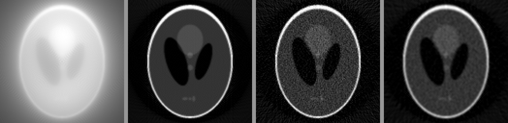

Plain back-projection blurs every point with a 1/r halo, because the spokes of the Fourier slice theorem crowd at the centre of the spectrum. Today: the fix, and what a scan needs to work.
Filtered back-projection (FBP): filter each projection with a ramp before smearing it back.
Noise: the ramp amplifies fine detail and noise alike; tapered ramps trade sharpness for less noise.
How many angles? The angle rule N_\theta \approx \tfrac{\pi}{2}N; too few give streaks.
Limited angle: the missing wedge of electron tomography.
Slides titled The math give the formulas and proofs; the ideas are complete without them.
Filter first, then smear
Before back-projecting, replace each projection by a filtered version that has a positive peak and negative sidelobes around every feature.
Back-projecting the filtered projection of a point: each smear is a positive stripe flanked by two negative stripes.
Near the point, where the smears of all angles overlap, the negative parts of one angle cancel the positive tails of the others: the halo disappears.
Far from the point, positive and negative contributions cancel on average: no glow.
Same total work as plain back-projection plus one 1D filter per projection. That is all FBP is.
Why a ramp
Use the spokes picture. Every projection fills one spoke of the 2D spectrum, so near the centre the spokes crowd and far out they thin:
at distance |\omega| from the centre the spokes are \pi|\omega|/N_\theta apart,
so each spoke should count in proportion to the gap it has to cover: weight \propto |\omega|.
The filter multiplies each projection’s 1D spectrum by |\omega|, a ramp: slow waves (over-counted) are turned down, fine ones up. It undoes exactly the 1/|\omega| of back-projection.
Filtering is the convolution theorem of the Fourier unit: multiplying the spectrum = convolving the projection with a small kernel. Here it is done in 1D, on each projection: cheap.
The math: deriving FBP
Write the 2D inverse Fourier transform in polar coordinates \boldsymbol\omega = \omega\,\mathbf n_\theta, \omega \in \mathbb R, \theta \in [0, \pi). The area element is d\boldsymbol\omega = |\omega|\,d\omega\,d\theta (the polar Jacobian):
q_\theta is p_\theta filtered with the ramp: its 1D spectrum is |\omega|P_\theta(\omega) (slice theorem for P_\theta).
The outer integral is back-projection. So f = \mathcal B(\text{ramp} * p): the ramp is the Jacobian.
Discretely: f \approx \frac{\pi}{N_\theta}\sum_k q_{\theta_k}(\mathbf x\cdot\mathbf n_{\theta_k}).
By hand: what the filter does to a box
The ramp as a kernel (bin spacing 1), the Ram–Lak kernel: centre \tfrac14, odd neighbours -\tfrac{1}{\pi^2 k^2}, even ones 0:
k
0
±1
±2
±3
±5
h[k]
0.25
−0.101
0
−0.011
−0.004
Truncated to three taps, (-0.1,\ 0.25,\ -0.1), applied to the projection of a box (0, 0, 1, 1, 1, 0, 0):
(0,\ -0.1,\ 0.15,\ 0.05,\ 0.15,\ -0.1,\ 0)
The edges are raised (0.15) relative to the inside (0.05): the box’s edges are fine detail, turned up.
Negative just outside (−0.1): when this is smeared back, it cancels the positive tails from other angles: no glow outside the object.
The sum of the full kernel is 0: a constant projection filters to (almost) nothing.
The math: the discrete ramp and zero padding
The sampled ramp |f|, |f| \le \tfrac12 cycles per bin, has the kernel h[0] = \tfrac14, h[k] = -1/(\pi k)^2 for odd k, 0 for even k \ne 0 (inverse DTFT of |f|, integrate by parts).
Its sum is \tfrac14 - 2\sum_{k\ \text{odd}}\frac{1}{\pi^2k^2} = \tfrac14 - \frac{2}{\pi^2}\cdot\frac{\pi^2}{8} = 0.
Filtering by FFT multiplies the DFTs: that is circular convolution. A projection of N bins must be zero-padded to at least 2N before the FFT; otherwise the kernel’s tail wraps one edge of the projection onto the other.
Taking the DFT of the spatial kernel (rather than sampling |f| directly) keeps a small positive value at DC, correct for a finite detector.
Try it: the ramp cancels the star
Noise and tapered ramps
The ramp is largest at the highest frequencies, where a low-dose projection holds mostly noise. Few photons → noisy line integrals → grainy reconstruction.
Tapered ramps multiply the ramp by a taper that rolls off towards a cutoff (the Fourier unit’s tapers): Shepp–Logan (a sinc), cosine, Hann (the strongest).
The trade: less noise, less sharpness. The same trade as low-pass filtering.

Plain back-projection; ramp; ramp at low dose (1000 photons per ray); Hann at the same dose.
Demo, Shepp–Logan, 1000 photons per ray, noise = standard deviation in a flat region: ramp 0.048, Shepp–Logan 0.038, cosine 0.023, Hann 0.016. Without noise the ramp has RMSE 0.039 and Hann 0.074: Hann blurs the edges.
The math: noise in FBP
Model each filtered projection bin as signal plus white noise of variance \sigma_n^2. Filtering with |\omega|W(\omega) (taper W, cutoff \omega_c) and back-projecting N_\theta angles gives, at every pixel,
\operatorname{Var}\hat f \;\propto\; \frac{\sigma_n^2}{N_\theta}\int_{-\omega_c}^{\omega_c}|\omega|^2\,W(\omega)^2\,d\omega \;\propto\; \sigma_n^2\,\omega_c^3 \quad\text{(fixed taper shape)}.
Halving the cutoff divides the noise variance by 8 (standard deviation by 2.8). The demo: Hann at cutoff 0.5 has noise std 0.016, at 0.25 it has 0.005 (ratio 3.2).
Finer pixels need a higher cutoff and collect fewer photons per detector bin: resolution is expensive in dose.
\sigma_n^2 for one line integral is about 1/(\text{counts}) (shot noise, the camera-noise unit): worst where few photons get through.
Try it: dose and filters
How many angles?
Use the spokes again. A detector with N bins gives spectrum samples out to radius N/2 (in frequency steps). With N_\theta angles over 180°, neighbouring spokes at that radius are \frac{\pi}{N_\theta}\cdot\frac{N}{2} steps apart. Asking for at most one step:
128 bins: about 200 angles; 256 bins: about 400; 512 bins: about 800.
Too few angles: streaks radiating from high-contrast edges. Each smear is no longer cancelled by its neighbours. Demo: Shepp–Logan with 18 angles (Hann), RMSE 0.109 against 0.074 with 200.
Too few bins (wide detector elements): blur. 64 bins instead of 128: RMSE 0.126; 32 bins: 0.164.
Limited angle: the missing wedge
In electron tomography the specimen holder tilts only to about \pm 60°–70°; beyond, the specimen gets too thick or the holder blocks the beam.
A tilt series from -60° to +60° in 2° steps has 61 images. The spokes cover 120° of the spectrum; a 60° wedge around the beam direction stays empty.
Missing frequencies cannot be filtered back in: whatever lived there is gone from the data.
Effect: objects are elongated along the beam; edges facing the beam (perpendicular to it) blur away, edges parallel to it stay sharp. A disc becomes a lemon: in the demo a disc of diameter 61 pixels comes out 58 wide and 70 tall.
Priors (the next unit) can fill part of the wedge; filtering cannot.
Try it: angles, range, bins and dose
The output scale
FBP returns attenuation coefficients \mu per pixel. Clinical CT reports them in Hounsfield units: \text{HU} = 1000\,(\mu - \mu_\text{water})/\mu_\text{water}, so water is 0 and air −1000; dense bone reaches over +1000. The display window/level that makes such 12-bit data readable is covered on the bit-depth day (12- and 16-bit images in practice).
Summary
FBP: filter each projection with a ramp|\omega|, then back-project. The ramp is the polar Jacobian; it undoes the 1/|\omega| of plain back-projection.
The filtered projection has negative sidelobes; their smears cancel the halo. Filter by FFT with zero padding, or the projection wraps around.
The ramp amplifies noise; tapered ramps (Shepp–Logan, cosine, Hann) and a lower cutoff trade sharpness for less noise. Noise variance grows like the cutoff cubed.
Angle ruleN_\theta \approx \tfrac{\pi}{2}N; too few angles → streaks, too few bins → blur.
A limited tilt range leaves a missing wedge: objects stretch along the beam, and no filter brings the wedge back.